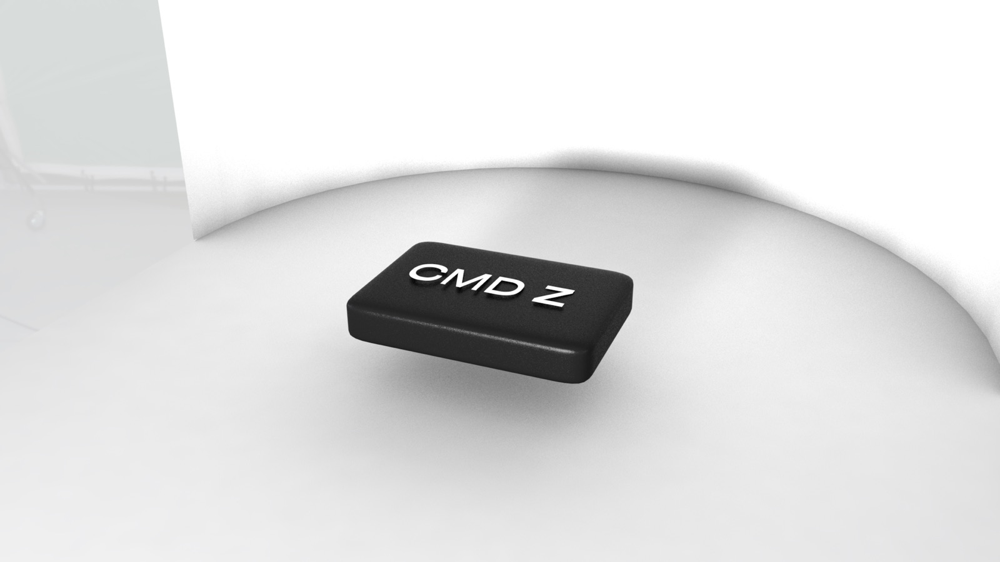

CMD Z
Progetti videoUn omaggio ironico ma sentito a uno dei gesti più sacri per ogni creativo: Command Z. Annullare, ricominciare, correggere, un lusso che nella vita reale non esiste, ma nel nostro workflow è pura salvezza.
Il progetto nasce dalla volontà di raccontare con leggerezza e autoironia il rapporto viscerale che ogni grafico e designer ha con questo tasto, elevandolo a vera e propria divinità del processo creativo.
Il video è stato realizzato attraverso un flusso di lavoro integrato: render e animazioni tridimensionali prodotti in Cinema 4D, successivamente importati e composti in After Effects.
L’intero processo di montaggio, test visivi e compositing finale è stato gestito all’interno di After Effects, permettendo un controllo preciso sull’estetica e sul ritmo narrativo del progetto.
